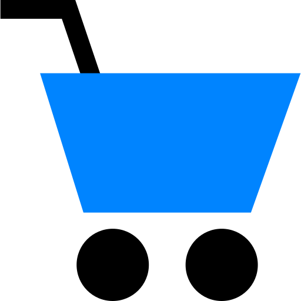

<!--
  Generated template for the ReglagesPage page.

  See http://ionicframework.com/docs/components/#navigation for more info on
  Ionic pages and navigation.
-->

<ion-content no-padding   >
  <ion-grid >
      <ion-row justify-content-center align-items-center text-center >
               
      </ion-row> 
      <ion-row justify-content-center align-items-center text-center >
        <ion-col>
          <ion-card  *ngIf="!isAuth"  >
            <ion-card-header >
              <h2 >Connexion</h2> 
            </ion-card-header>
            <ion-card-content>
              <form [formGroup]="userForm">
                <ion-list  no-lines>
                  <ion-item >
                    <ion-icon color="primary" item-start ios="ios-person" md="md-person"></ion-icon>
                    <ion-input type="text"  formControlName="email" placeholder="Login" value="mohamed@gmail.com" ></ion-input>
                  </ion-item>
                  <ion-item  >
                    <ion-icon color="primary"  item-start ios="ios-lock" md="md-lock"></ion-icon>
                    <ion-input type="password" formControlName="passwd"  placeholder="Mot de passe" value="mohamed123"></ion-input>
                  </ion-item>
                  
                <div hidden></div>
              </ion-list>
            
              <button ion-button round  margin-top  color="primary" [disabled]="userForm.invalid" (click)=" onSubmitSignIn()" color="light">Se connecter</button>
            
              </form>
            </ion-card-content>
            </ion-card>
          </ion-col>
    </ion-row>
  

      <ion-row justify-content-center align-items-center text-center  style="height: 100%" *ngIf="isAuth" >
        <button ion-button round  color="danger"  (click)="LogOut()">Se deconnecter</button>
      </ion-row>
    </ion-grid>

    <ion-slides pager style="height: 60%;"  *ngIf="isAuth">

      <ion-slide >
      
        
        <ion-card>
          <ion-card-header>
            <ion-card-title>Mini projet</ion-card-title>
          </ion-card-header>
          <ion-card-content>
            Cette application a été réalisé en 2021 au sein d'un mini projet
            en utilisant la version 3 de Ionic. 
            Le but de ce projet est de réaliser une application mobile de ecommerce  
          </ion-card-content>
        </ion-card>
      </ion-slide>
    
      <ion-slide >
        <ion-card>
          <ion-card-header>
            
          </ion-card-header>
          <ion-card-content>
            <p><strong>Auteur : </strong>Mohamed Ben Chamakh</p>
            <p><strong>Contact : </strong>mohamed.ben.chamakh98@gmail.com</p>
          </ion-card-content>
        </ion-card>
      </ion-slide>
  
    
    </ion-slides>

</ion-content>
